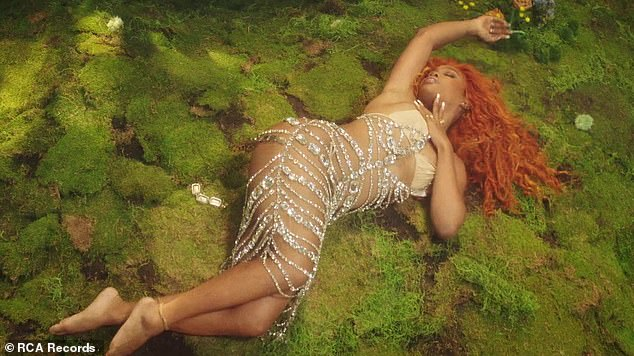

Solána Imani Rowe (St. Louis, 8 de novembro de 1990), mais conhecida pelo seu nome artístico SZA (pronuncia-se Si-za), é uma cantora e compositora estadunidense.
Após sair de sua cidade natal, mudou-se para Maplewood (Nova Jersey). Em outubro de 2012, Rowe lançou sua mixtape de estreia intitulada See.SZA.Run. Em abril de 2013 continuou seus trabalhos lançando sua segunda mixtape, intitulada S. Em julho de 2013, foi anunciado que Rowe havia assinado com a gravadora de hip-hop Top Dawg Entertainment, na qual ela lançou em abril de 2014 sua extended play (EP) de estreia, intitulada Z. Nos anos seguintes, SZA entrou em hiato no mundo musical preparando seu álbum de estreia, intitulada Ctrl, lançado em 9 de junho de 2017, com aclamação universal dos críticos de música. O álbum estreou na terceira posição na parada Billboard Top 200 e emplacou certificados de platina pelos singles "The Weekend" e "Love Galore", que apresenta rapper Travis Scott. O Ctrl recebeu várias indicações aos prêmios Grammy, incluindo o de Melhor Álbum Urbano Contemporâneo.
SZA é uma cantora de neo-soul, cuja música é sonoramente descrita como R&B alternativo, com elemento de soul, hip-hop, R&B minimalista, cloud rap, witch house e chillwave. As letras de Rowe são descritas como "desenroladas", que giram em torno de temas de sexualidade, nostalgia e abandono. SZA cita uma variedade de artistas como suas influências, incluindo Meelah e Jamiroquai. SZA também tem influências de artistas que não são inclusos no mundo musical, que atuam como ginastas, patinadores, pintores e cineastas, como Spike Lee.
Álbuns de estúdio
EP's e Mixtapes
Além disso, Sza conta com singles que não saem dos seus fones, como por exmplo "Kiss Me More - Doja Cat (ft. Sza)", "Shirt" (seu último lançamento que já estava viralizados em plataformas, como, o TikTok) entre outros.